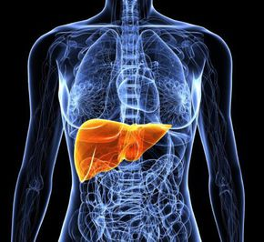

Descriere - Steatoza (ficatul gras) reprezinta acumularea de grasime la nivelul ficatului. Cand este prezenta si inflamatia (obiectivata de cele mai multe ori prin cresterea valorilor unor enzime hepatice numite transaminaze), boala se numeste steatohepatita si poate progresa catre ciroza si chiar hepatocarcinom (cancer al ficatului).
Steatoza implica acumularea de trigliceride si alte lipide la nivelul hepatocitelor, ca urmare a unui metabolism defectuos al acizilor grasi care ar putea fi cauzat de un dezechilibru intre aportul energetic si arderi, prin afectarea mitocondriilor (precum in cazul alcoolului), prin insulino-rezistenta sau prin afectarea receptorilor si enzimelor implicate in acest proces metabolic.
Ficatul gras prezinta doua tipuri principale:
Singura diferenta dintre cele doua este consumul de alcool. Daca depaseste 20 g pe zi la femei si 30 g pe zi la barbati, putem vorbi de steatoza alcoolica.
Alcoolul este una dintre principalele cauze ale steatozei hepatice, cel putin in tara noastra.
Steatoza non-alcoolica este asociata cu obezitatea, intoleranta la glucoza si diabetul zaharat, dislipidemia, fiind descrisa ca manifestare in cadrul sindromului metabolic.
Sunt considerati de asemenea factori de risc: anumite medicamente, chirurgia de bypass gastric, dislipidemia, malnutritia, pierderea rapida in greutate, diferite produse chimice, pesticide, boala Wilson.
Majoritatea pacientilor cu steatoza nu prezinta simptome, dar unii dintre ei pot raporta oboseala, slabiciune sau durere subcostala dreapta. Multi se prezinta pentru analize modificate ale functiei hepatice, descoperite intamplator, la examenele de rutina.
Boala hepatica avansata se caracterizeaza prin simptome de gravitate precum icter, edeme sau ascita (lichid in cavitatea peritoneala). La examenul fizic, se mai poate decela hepatomegalie (marirea in dimensiuni a ficatului), iar in cazuri mai avansate (ciroza), apare si splenomegalie (marirea in dimensiuni a splinei).
Analize de sange: testele functionale hepatice, indeosebi enzimele hepatice, pot ajuta medicul la stabilirea diagnosticului. In steatoza hepatita, enzimele hepatice ALT si AST pot fi crescute, iar GGT creste in special in boala hepatica asociata cu consumul de alcool. In steatoza non+alcoolica, sunt observate deseori cresteri ale lipidelor serice (colesterol, trigliceride) sau ale glicemiei (glucozei serice).
Proceduri imagistice. Ecografia abdominala, dar si tomografia computerizata si examenul RMN pot releva steatoza hepatica.
Evaluarea fibrozei hepatice. In cazul in care se suspecteaza o boala hepatica mai avansata, pot fi necesare teste care sa puna in evidenta in ce masura ficatul este afectat de fibroza (o forma de cicatrizare a tesutului hepatic, care poate aparea in timp ca urmare a inflamatiei celulelor hepatice). Fibroza poate fi evidentiata atat printr-o procedura invaziva (biopsia hepatica, adica prelevarea unei mici probe de tesut hepatic cu ajutorul punctiei cu un ac special), cat si prin teste non-invazive (Fibroscan sau FibroMax).
Stoparea consumului de alcool este recomandata in ambele cazuri de steatoza.
De multe ori, este necesara pierderea in greutate, caci multi pacienti cu steatoza sunt supraponderali.
Se recomanda o dieta bogata in proteine si cu continut scazut de grasimi si glucide (hipolipidica, hipoglucidica). Trebuie redus in primul rand consumul de grasimi saturate care trebuie inlocuite cu lipide nesaturate precum cele continute in peste, ulei de masline, nuci. Includeti de asemenea cereale integrale in dieta, precum paine integrala, orez brun.
Trebuie cosumate multe fructe si legume, pentru efectul lor antioxidant.
Controlati-va diabetul. Urmati instructiunile medicului dvs. pentru a controla boala diabetica de care suferiti. Luati medicamentele asa cum vi s-a recomandat si monitorizati-va corect glicemia.
Exercitiile fizice asociate dietei alimentare cresc masa musculara si sensibilitatea tesuturilor la insulina. Incercati sa faceti cel putin 30 de minte pe zi de exercitii fizice. Urcati pe scari in loc sa folositi liftul de cate ori aveti ocazia. Mergeti mai mult pe jos si mai putin cu masina personala sau autobuzul.
Steatoza si indeosebi steatohepatita pot progresa spre ciroza si insuficienta hepatica, precum orice alta boala hepatica cronica.
Progresia catre ciroza este mai rapida in cazul consumului de alcool, sau al unei alte afectiuni hepatice concomitente, ca de exemplu o hepatita cronica virala. Lipsa controlului hiperlipidemiei si al diabetului poate accelera progresia spre fibroza.
Carcinomul hepatocelular poate aparea, riscul fiind acelasi cu al altor forme de boala hepatica.
Steatoza:are un prognostic bun daca se renunta la consumul de alcool si pacientul scade in greutate si respecta dieta. Numai 1-2% dintre pacienti evolueaza catre ciroza dupa circa 20 ani. Obezitatea si rezistenta la insulina sunt totodata si factori de risc si pentru diabet zaharat, boli cardiovasculare si renale.
Steatohepatita:10% pana la 12% dintre pacienti vor progresa spre ciroza in aproximativ 8 ani. Aceasta rata este similara cu aceea a progresiei spre ciroza in cazul bolii alcoolice a ficatului.
Este posibil sa prevenim steatohepatita prin screeningul activ al pacientilor aflati la risc de a dezvolta steatoza, educandu-i asupra dietei, exercitiului fizic si riscurilor asociate consumului de alcool.
Urmarirea pacientilor ar trebui sa detecteze semnele de progresie a bolii hepatice (simptome, rezultate anormale ale testelor de sange, probe imagistice).
Nu exista un tratament standard pentru steatoza hepatica. Cele mai importante raman masurile igieno-dietetice prezentate mai sus.
Medicul v-ar putea recomanda diferite suplimente alimentare si vitamine care sa va protejeze ficatul prin reducerea sau neutralizarea procesului inflamator. Dintre acestea, mai utilizate sunt silimarina, vitaminele din grupul B, vitamina E, fosfolipidele.
Exista studii in desfasurare care evalueaza potentialul de reducere a steatozei de catre agentii hipolipemianti si ai medicamentelor care influenteaza metabolismul insulinei. Au fost evidentiate imbunatatiri histologice si biochimice la utilizarea tiazolidindionelor, metforminului, orlistatului si atorvastatinei (medicamente folosite in tratmentulu diabetului si al dislipidemiilor).